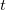
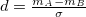
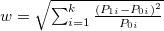
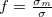
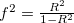
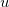
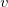
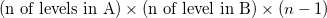
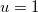
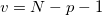

| 心理学のためのサンプルサイズ設計入門 |
| 心理学のためのサンプルサイズ設計入門 |
[1] 赤玉と白玉が100個入っている袋からランダムに1つ取り出したところ、赤玉だった。 袋の中身が
赤玉5個、白玉95個
赤玉80個、白玉20個
のいずれかとしたら、どちらだと考えるか。（
多分、2番）
[2] また、 袋の中身が
赤玉5個、白玉95個
赤玉6個、白玉94個
のいずれかとしたら、どちらだと考えるか。（
検定力は低いが有意な結果が得られた、というのは後者の状態。
帰無仮説のみに注目するのではなく、「帰無仮説のもとでは得られにくく、かつ、対立仮説のもとでは得られやすい結果」が得られたときに帰無仮説を棄却するという、多くの人が直感的に行う判断と同じロジックを取っている。
Cohen (1992) では、
測定尺度に依存しない
連続量である
0以上の値を取る
帰無仮説のもとでは0となる
性質を持つものとして、8種類の検定について効果量の指標を定義。
検定の種類 |
効果量の指標 |
小 |
中 |
大 |
検定 |
 |
0.20 |
0.50 |
0.80 |
無相関検定 |
|
0.10 |
0.30 |
0.50 |
カイ2乗検定 |
 |
0.10 |
0.30 |
0.50 |
分散分析 |
 |
0.10 |
0.25 |
0.40 |
重回帰分析 |
 |
0.02 |
0.15 |
0.35 |
パッケージ pwr の関数 pwr.anova.test() を用いて、
pwr.anova.test(k=3, sig.level=0.01, f=0.25, power=0.8)
とすると、3群の比較、有意水準0.01、効果量0.25、検定力0.8で検定を行うためのサンプルサイズ（群あたり）が得られる。
パッケージ pwr の関数 pwr.f2.test() を用いて、
pwr.f2.test(u=1, f2=0.25^2, power=0.8)
とする。は分子の自由度。
必要なサンプルサイズは、アウトプット
Multiple regression power calculation
u = 1
v = 125.5312
f2 = 0.0625
sig.level = 0.05
power = 0.8
に分母の自由度として報告される。 分母の自由度が
|  |
によって求められることから、逆算して を求める。
を求める。
重回帰分析の場合も、, であることを利用すれば同じ。
| 心理学のためのサンプルサイズ設計入門 |